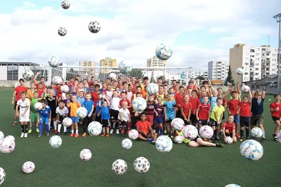
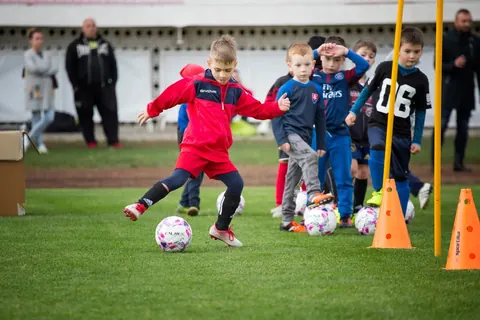
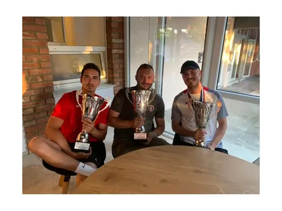

Mládež a nábor
12 mládežníckych tímov v sezóne 2026/27, podľa klubu viac ako 250 detí a mladých hráčov.

Cieľom klubu je rozvíjať v deťoch lásku k športu a vychovávať hráčov, ktorí si vzťah k pohybu ponesú celý život. U15, U14, U13 A, U12 hrajú I. ligu žiakov v skupine Západ so Slovanom Bratislava, Spartakom Trnava, DAC či AS Trenčín.
Nábor
Chce vaše dieťa hrať futbal?
Predprípravka je pre deti od 4 do 6 rokov. Začínate s futbalom alebo sa chcete posunúť ďalej? Zavolajte alebo napíšte a dohodnite si tréning či skúšku.
Kategórie
Predprípravka
4 – 6 rokov
Prvé kroky na ihrisku: ovládanie lopty, všeobecný pohybový rozvoj a pravidlá futbalu.
Prípravka
U9 – U11
Základy práce s loptou, radosť z hry a prvé zápasy. Dôležitejšie než výsledok je, koľkokrát sa dieťa dostane k lopte.
Žiaci
U12 – U15
Individuálne herné činnosti, postupne taktika a odvaha v náročnejších situáciách. Hráči sa učia rýchlo rozhodovať a niesť zodpovednosť.
Dorast
U17 – U19
Spojenie individuálnej kvality s tímovou hrou a príprava na seniorský futbal, kde rozhoduje rýchlosť rozhodovania.
Texty podľa webu klubu, skrátené.
Členské príspevky
Príspevky pomáhajú zabezpečiť tréningový proces a chod klubu a vyžaduje ich aj licenčný systém SFZ.
| Kategória | Mesačne |
|---|---|
| U7 | 30 € |
| U8 | 40 € |
| U9 – U15 | 50 € |
| U17 | 30 € |
Druhé dieťa z rodiny členský príspevok neplatí. Výška podľa webu klubu, aktuálnu sumu potvrdí klub pri zápise.

Vitrína mládeže
7 titulov za 3 sezóny
Po vzniku v roku 2020 sa klub zameral na výchovu mládeže. Od sezóny 2021/22 vyhrali mládežnícke tímy FC Topoľčany 7 súťaží Západoslovenského futbalového zväzu.

2021/22
- III. liga mladšieho dorastu U17 Tréner: Pavol Baláž
- II. liga starších žiakov U15 Tréner: Marek Ladický
- III. liga mladších žiakov U12 Tréner: Jakub Kastelovič titul istý niekoľko kôl pred koncom, proti o rok starším
2022/23
- II. liga starších žiakov U15 · skóre 127:31 Tréner: Juraj Jakubička
- II. liga mladších žiakov U13 · skóre 211:26 Tréner: Marek Ladický majstri štyri kolá pred koncom
2023/24
- II. liga starších žiakov ročník 2009 · skóre 98:10 Tréner: Juraj Jakubička tretí titul za sebou, ako prvý klub v histórii súťaže
- III. liga starších žiakov ročník 2010 · skóre 146:26 Tréner: Marek Ladický, Pavol Baláž 54 zápasov bez prehry od 1. 9. 2022
Zdroj: články na webe klubu (sezóny 2021/22 až 2023/24).
Podpora mládeže
Darujte 2 % z dane
Klub každý rok žiada fanúšikov a rodičov o 2 % z dane na rozvoj mládeže, vybavenie a lepšie podmienky na tréning. Tlačivo je na webe klubu.
Nitriansky kraj
Projekt „Bezpečná doprava a kvalitnejší tréningový proces pre našich hráčov“ podporil Nitriansky samosprávny kraj dotáciou.